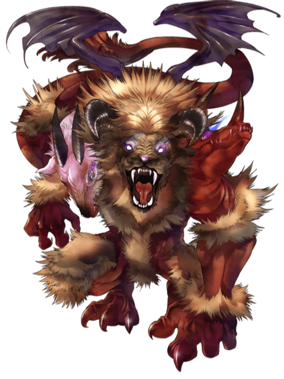
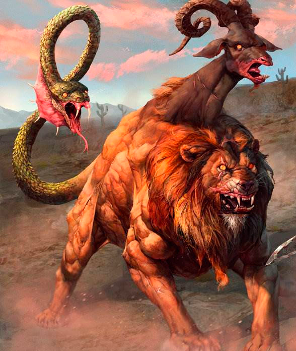

Quimera
Leão que é cobra e leão e bode também

Oriunda da Anatólia e cujo tipo surgiu na Grécia durante o século VII a.C., sempre exerceu atração sobre o imaginário popular. De acordo com a versão mais difundida da lenda, a quimera era um monstruoso produto da união entre Equidna — metade mulher, metade serpente — e o gigantesco Tifão.
Outras lendas a fazem filha da hidra de Lerna e do leão da Nemeia, mortos por Hércules. Criada pelo rei da Cária, mais tarde assolaria este reino e o de Lícia bafejando fogo incessantemente, até que o herói Belerofonte, montado no cavalo alado Pégaso, conseguiu matá-la.
Com o passar do tempo, chamou-se genericamente quimera a todo monstro fantástico empregado na decoração arquitetônica.

Na Alquimia, é um ser artificial (assim como o homúnculo), criado a partir da fusão de um ser humano e animal.carece de fontes.
Na Botânica, é quando uma planta é formada por vários tecidos geneticamente distintos. Na Genética, é quando um organismo é formado por duas linhagens genéticas, sendo cada uma originária de um organismo distinto.
Na Zoologia, existe um peixe denominado Quimera-antártica, que usualmente habita águas profundas nas regiões da Argentina e do Uruguai.
Figurativamente ou em linguagem popular mais ampla, o termo quimera alude a qualquer composição fantástica, absurda, monstruosa ou incoerente, constituída de elementos disparatados ou incongruentes, significando também utopia. A palavra quimera, por derivação de sentido, significa também o produto da imaginação, um sonho ou fantasia (por exemplo: A Quimera de Ouro).

| Habilidades |
| Voar |
| Ser 3 animais diferentes
|
| Botar ovos??? |